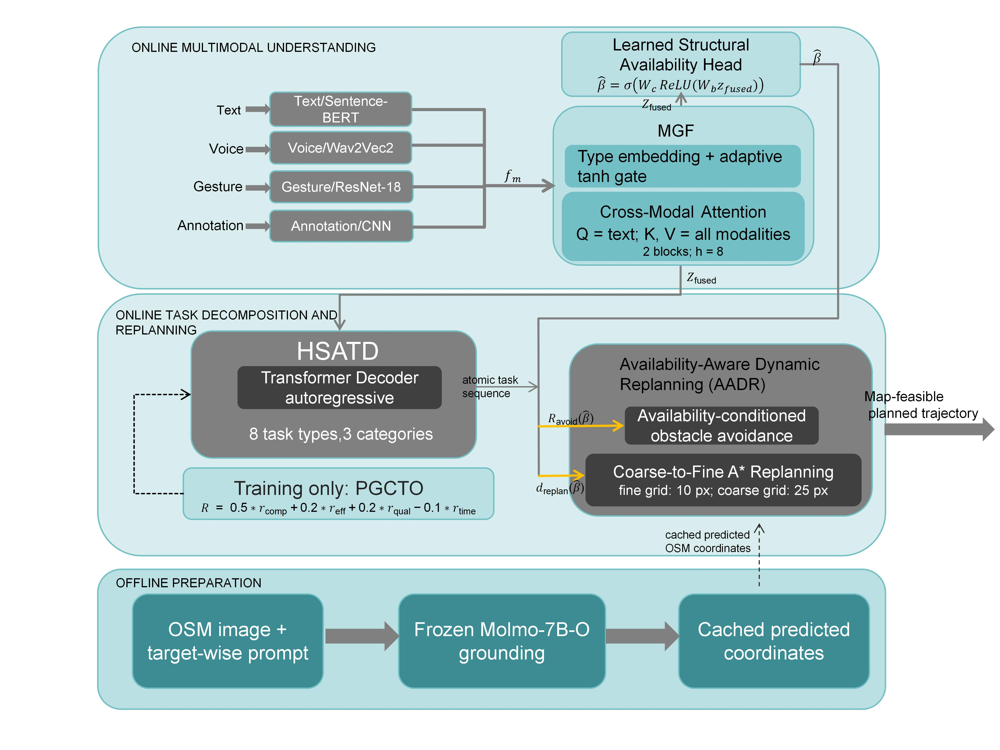

Overview
UAV mission planning often requires text, voice, gesture, and map annotations to be interpreted together. This project develops a structured interface between multimodal understanding, hierarchical task decomposition, and dynamic replanning.

Framework components
Modality-Gated Fusion
Combines text, voice, gesture, and annotation representations through cross-modal attention and adaptive gating.
HSATD
Produces an ordered atomic-task sequence with operational transition constraints.
AADR
Uses structural availability information to condition map-level obstacle clearance and replanning scope.
Offline grounding
Uses frozen visual grounding to generate and cache predicted coordinates before online replanning.
Evidence and scope
The public release will include only publication-safe code, de-identified summaries, protocol definitions, and reproducibility documentation. It does not provide a safety certification, closed-loop flight validation, or an official reproduction of external methods.
Release roadmap
- Publish reviewed documentation and the project page.
- Release sanitized code and configuration files.
- Add de-identified aggregate results and integrity manifests after permissions review.